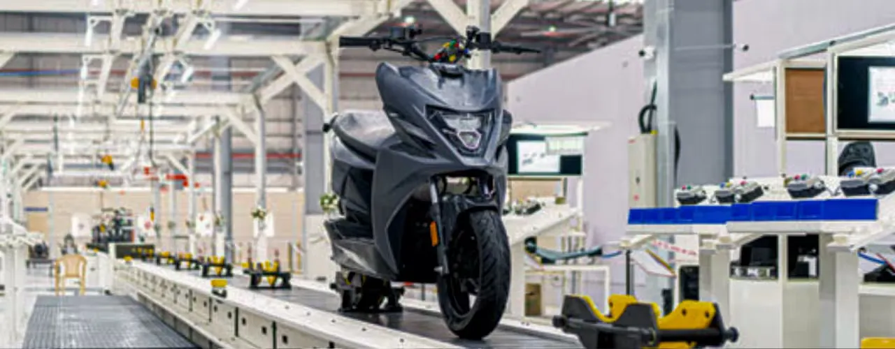

About the Client
A plant assembly integrator focused on the growing electric mobility segment. The client partnered with CS TECH Ai to plan and design a lean manufacturing facility for producing eight electric two-wheeler variants, optimized for speed, quality, and cost-efficiency.
The Challenge
The client needed to establish a digital lean manufacturing facility capable of delivering high-quality output across multiple EV variants — while keeping capital investment low and operational efficiency high. The complexity lay in balancing ergonomics, process modularity, and flexibility across product lines.
Key challenges included:
- Designing a scalable plant for eight electric scooter variants
- Minimizing capital investment while meeting productivity goals
- Aligning plant layout and assembly flow with lean manufacturing principles
- Integrating logistics, ergonomics, and digital factory planning
The Solution
We executed a 3-stage approach to deliver a fully optimized plant plan aligned with lean and digital manufacturing standards.
Key solution components included:
- Stage 1 – Assessment and Recommendations Collected and analyzed baseline plant data Developed a recommendation report with actionable insights Defined key performance indicators (KPIs) for cost, quality, and productivity
- Stage 2 – Concept Engineering Designed innovative assembly layouts and in-plant logistics flows Integrated lean manufacturing principles into material movement, workstations, and ergonomics Developed modular concepts to accommodate variant flexibility
- Stage 3 – Detail Planning Created comprehensive digital factory layouts and simulation-ready models Generated detailed manufacturing drawings Aligned plant infrastructure with future automation and Industry 4.0 readiness
The Impact
The project established a world-class foundation for electric two-wheeler production: